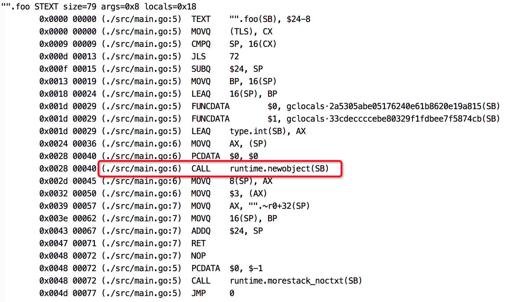

在编译原理中，分析指针动态范围的方法称之为逃逸分析。通俗来讲，当一个对象的指针被多个方法或线程引用时，我们称这个指针发生了逃逸。
Go语言的逃逸分析是编译器执行静态代码分析后，对内存管理进行的优化和简化，它可以决定一个变量是分配到堆还栈上。
写过C/C++的同学都知道，调用著名的malloc和new函数可以在堆上分配一块内存，这块内存的使用和销毁的责任都在程序员。一不小心，就会发生内存泄露。
Go语言里，基本不用担心内存泄露了。虽然也有new函数，但是使用new函数得到的内存不一定就在堆上。堆和栈的区别对程序员“模糊化”了，当然这一切都是Go编译器在背后帮我们完成的。
Go语言逃逸分析最基本的原则是：如果一个函数返回对一个变量的引用，那么它就会发生逃逸。
简单来说，编译器会分析代码的特征和代码生命周期，Go中的变量只有在编译器可以证明在函数返回后不会再被引用的，才分配到栈上，其他情况下都是分配到堆上。
Go语言里没有一个关键字或者函数可以直接让变量被编译器分配到堆上，相反，编译器通过分析代码来决定将变量分配到何处。
对一个变量取地址，可能会被分配到堆上。但是编译器进行逃逸分析后，如果考察到在函数返回后，此变量不会被引用，那么还是会被分配到栈上。
编译器会根据变量是否被外部引用来决定是否逃逸：
- 如果函数外部没有引用，则优先放到栈中；
- 如果函数外部存在引用，则必定放到堆中；
写C/C++代码时，为了提高效率，常常将pass-by-value（传值）“升级”成pass-by-reference，企图避免构造函数的运行，并且直接返回一个指针。
你一定还记得，这里隐藏了一个很大的坑：在函数内部定义了一个局部变量，然后返回这个局部变量的地址（指针）。这些局部变量是在栈上分配的（静态内存分配），一旦函数执行完毕，变量占据的内存会被销毁，任何对这个返回值作的动作（如解引用），都将扰乱程序的运行，甚至导致程序直接崩溃。比如下面的这段代码：
|
|
有些同学可能知道上面这个坑，用了个更聪明的做法：在函数内部使用new函数构造一个变量（动态内存分配），然后返回此变量的地址。因为变量是在堆上创建的，所以函数退出时不会被销毁。但是，这样就行了吗？new出来的对象该在何时何地delete呢？调用者可能会忘记delete或者直接拿返回值传给其他函数，之后就再也不能delete它了，也就是发生了内存泄露。关于这个坑，大家可以去看看《Effective C++》条款21，讲得非常好！
C++是公认的语法最复杂的语言，据说没有人可以完全掌握C++的语法。而这一切在Go语言中就大不相同了。像上面示例的C++代码放到Go里，没有任何问题。
前面讲的C/C++中出现的问题，在Go中作为一个语言特性被大力推崇。真是C/C++之砒霜Go之蜜糖！
C/C++中动态分配的内存需要我们手动释放，导致我们平时在写程序时，如履薄冰。这样做有他的好处：程序员可以完全掌控内存。但是缺点也是很多的：经常出现忘记释放内存，导致内存泄露。所以，很多现代语言都加上了垃圾回收机制。
Go的垃圾回收，让堆和栈对程序员保持透明。真正解放了程序员的双手，让他们可以专注于业务，“高效”地完成代码编写。把那些内存管理的复杂机制交给编译器，而程序员可以去享受生活。
逃逸分析这种“骚操作”把变量合理地分配到它该去的地方。即使你是用new申请到的内存，如果我发现你竟然在退出函数后没有用了，那么就把你丢到栈上，毕竟栈上的内存分配比堆上快很多；反之，即使你表面上只是一个普通的变量，但是经过逃逸分析后发现在退出函数之后还有其他地方在引用，那我就把你分配到堆上。
如果变量都分配到堆上，堆不像栈可以自动清理。它会引起Go频繁地进行垃圾回收，而垃圾回收会占用比较大的系统开销（占用CPU容量的25%）。
堆和栈相比，堆适合不可预知大小的内存分配。但是为此付出的代价是分配速度较慢，而且会形成内存碎片。栈内存分配则会非常快。栈分配内存只需要两个CPU指令：“PUSH”和“RELEASE”，分配和释放；而堆分配内存首先需要去找到一块大小合适的内存块，之后要通过垃圾回收才能释放。
通过逃逸分析，可以尽量把那些不需要分配到堆上的变量直接分配到栈上，堆上的变量少了，会减轻分配堆内存的开销，同时也会减少gc的压力，提高程序的运行速度。
引申1：如何查看某个变量是否发生了逃逸？ 两种方法：使用go命令，查看逃逸分析结果；反汇编源码；
比如用这个例子：
|
|
使用go命令：
|
|
加-l是为了不让foo函数被内联。得到如下输出：
|
|
foo函数里的变量t逃逸了，和我们预想的一致。让我们不解的是为什么main函数里的x也逃逸了？这是因为有些函数参数为interface类型，比如fmt.Println(a …interface{})，编译期间很难确定其参数的具体类型，也会发生逃逸。
反汇编源码：
|
|
截取部分结果，图中标记出来的说明t是在堆上分配内存，发生了逃逸。

引申2：下面代码中的变量发生逃逸了吗？ 示例1：代码出处
|
|
分析：Go语言函数传递都是通过值的，调用函数的时候，直接在栈上copy出一份参数，不存在逃逸。
示例2：
|
|
分析：identity函数的输入直接当成返回值了，因为没有对z作引用，所以z没有逃逸。对x的引用也没有逃出main函数的作用域，因此x也没有发生逃逸。
示例3：
|
|
分析：z是对x的拷贝，ref函数中对z取了引用，所以z不能放在栈上，否则在ref函数之外，通过引用如何找到z，所以z必须要逃逸到堆上。仅管在main函数中，直接丢弃了ref的结果，但是Go的编译器还没有那么智能，分析不出来这种情况。而对x从来就没有取引用，所以x不会发生逃逸。
示例4：如果对一个结构体成员赋引用如何？
|
|
分析：refStruct函数对y取了引用，所以y发生了逃逸。
示例5：
|
|
分析：在main函数里对i取了引用，并且把它传给了refStruct函数，i的引用一直在main函数的作用域用，因此i没有发生逃逸。和上一个例子相比，有一点小差别，但是导致的程序效果是不同的：例子4中，i先在main的栈帧中分配，之后又在refStruct栈帧中分配，然后又逃逸到堆上，到堆上分配了一次，共3次分配。本例中，i只分配了一次，然后通过引用传递。
示例6：
|
|
分析：本例i发生了逃逸，按照前面例子5的分析，i不会逃逸。两个例子的区别是例子5中的S是在返回值里的，输入只能“流入”到输出，本例中的S是在输入参数中，所以逃逸分析失败，i要逃逸到堆上。